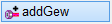
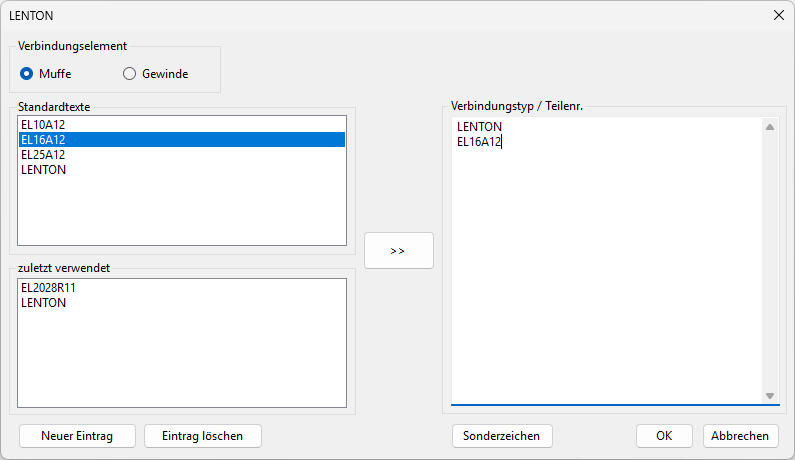
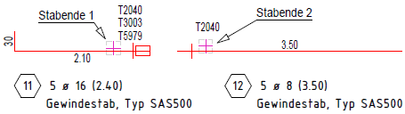
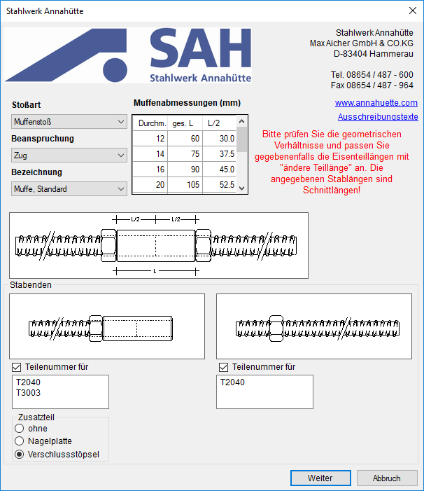

")
")
Um Bewehrungsanschlüsse mit Muffen auszuführen, können Sie unter verschiedenen Typen wählen. Für Stabpositionen, die mit Verbindungselementen versehen sind, werden separate Stahllisten und Biegelisten erzeugt.
|
Tipps: |
|
·Sie können diesen Stäben ein spezielles Umrandungssymbol zuordnen. » Positionsumrandung oder Stahlgüte ändern; [Formst | BiForm | GütUmr]. ·Die Reihenfolge der Gewindetypen, die in der Auswahlliste unter Gew.-Typ angeboten werden, entspricht der Anordnung in den Betonstahl-Tabellen. |

So wird's gemacht:
§Wählen Sie in der Auswahlliste unter Gew.-Typ den gewünschten Gewindetyp oder bestätigen Sie den Vorschlag mit Rechtsklick.
-Manuelle Eingaben, die nicht den Listeneinträgen entsprechen, sind nicht zulässig.
-Je nach Gewindetyp erfolgen weitere Abfragen. Für SAS500 und SAS550 siehe hier.
§Wählen Sie das Verbindungselement: Muffe oder Gewinde.
§Geben Sie unter Verbindungstyp / Teilenr. Informationen zu dem Verbindungselement an, das an der Auszugsform ergänzt werden sollen.
-Sie können angelegte Standardtexte (siehe Standardtexte in der Dialogbeschreibung weiter unten) mit manuellen Eingaben kombinieren.
-Neue Zeile: Mit der Eingabetaste fügen Sie einen Zeilenumbruch ein.
§Um einen vorhandenen Text aus der Liste Standardtexte an die Cursorposition zu setzen, doppelklicken Sie den Text an. Sie können den Text auch markieren und auf  klicken.
klicken.
 Muffe Zeichnet das Symbol für Muffe am Stabende. Gewinde Zeichnet am Stabende einen Doppelstrich. Standardtexte Liste mit angelegten Standardtexten (siehe Neuer Eintrag weiter unten). Die Standardtexte werden alphabetisch sortiert. Es wird eine separate Liste je nach Gewindetyp (GEWI, LENTON, DUMBO usw.) und Verbindungselement geführt. zuletzt verwendet Liste mit den 10 zuletzt verwendeten Standardtexten und freien Eingaben.
Überträgt den markierten Standardtext in die Liste Verbindungstyp / Teilenr. Der Text wird an die Cursorposition gesetzt. Mit einem Doppelklick auf einen Standardtext lässt sich dieser ebenfalls übertragen. Verbindungstyp / Teilenr. Freie Texteingabe, wie z. B. Teilenummern, und Übernahme von Standardtexten. Die Eingabe wird am Auszug dargestellt und in die Biegeliste übernommen. Mit der Eingabetaste fügen Sie einen Zeilenumbruch ein. Die Textdarstellung am Auszug kann in den Systemdaten konfiguriert werden. [Option | SysDat | Formstahl | Auszug Rundstahl → Texte Teillänge]. Neuer Eintrag Erstellen eines neuen Standardtextes. Wird der Liste Standardtexte hinzugefügt. Mit der Eingabetaste fügen Sie eine neue Zeile ein. Bestätigen Sie die Eingabe mit OK. In der Liste Standardtexte werden mehrzeilige Eingaben in einer Zeile dargestellt. Wird eine dieser Eingaben in die Liste Verbindungstyp / Teilenr. übernommen, werden die Texte mehrzeilig eingefügt. Eintrag löschen Löschen des markierten Eintrages aus der Liste Standardtexte. Sonderzeichen Eingabe von Sonderzeichen im Textfeld. Ruft den Dialog Sonderzeichen auf. OK Übernimmt die Eingaben und fährt mit der nächsten Abfrage fort. Abbrechen Kehrt zur Auswahl des Gewindetyps [Gew.-Typ] zurück. |
§Klicken Sie das Stabende an, welches mit dem Symbol gezeichnet werden soll. [Formende].
Sie können sofort einen weiteren Gewindestab erzeugen.
SAS500; SAS550
Gewindetypen des Stahlwerks Annahütte. Für Deutschland: SAS500; für Österreich: SAS550. Öffnet jeweils den Dialog Stahlwerk Annahütte mit den entsprechenden Vorgaben.
§Wählen Sie im Dialog Stahlwerk Annahütte die gewünschten Einstellungen und klicken Sie auf Weiter.
Dialogbeschreibung siehe weiter unten.
§Klicken Sie das Ende eines Stabauszuges an, an dem die gewählten Teile angefügt werden sollen. [Stabende 1].
Beachten Sie, dass der Auszug nur mit einer einzigen Positionsnummer geführt wird. Es wird der Zusatztext "Gewindestab, Typ SAS500" hinzugefügt.
§Klicken Sie das Ende am Stabauszug an, an dem das Gegenstück von Stabende 1 angebracht werden soll. [Stabende 2].
Diese Auszugsform erhält ebenfalls den Zusatztext. Wenn für den zweiten Stab Teilenummern ausgewählt wurden, klicken Sie das entsprechende Stabende am Auszug an. Sie können sofort einen weiteren Gewindestab erzeugen.
Beispiel:
 |
Optionen im Dialog "Stahlwerk Annahütte"
 |
Stoßart
Wählen Sie eine der Möglichkeiten aus der Dropdown-Liste aus.
Beanspruchung
Stellen Sie die Beanspruchungsart ein.
Bezeichnung
Die angebotenen Möglichkeiten richten sich nach den vorherigen Angaben.
Muffenabmessungen (mm)
Diese Tabelle zeigt die Abmessungen der Muffen für verschiedene Durchmesser.
Beachten Sie den Abstand zwischen dem Stabende und dem Muffenende. Hier müssen Sie die Teillänge entsprechend kürzen.
Abbildung
Die Abbildung zeigt den fertigen Zustand.
Stabenden
Für beide Stabenden (zwei verschiedene Stäbe) werden die Teilenummern angegeben.
Entfernen Sie den Haken aus der zugehörigen Checkbox, um diesen Anschluss nicht auszuführen. Dies kann der Fall sein, wenn die entsprechenden Anschlussstäbe auf einer anderen Zeichnung liegen.
Zusatzteil
Beim normalen Muffenstoß können Sie wählen, ob das freie Ende der Muffe mit einem Verschlussstöpsel versehen werden soll oder mit einer Nagelplatte oder ohne Zusatzteil geliefert werden soll.
Weiter
Übernimmt die Eingaben und fährt mit der nächsten Abfrage fort. [Stabende 1; Stabende 2].
Abbrechen
Kehrt zur Auswahl des Gewindetyps zurück [Gew.-Typ].
Siehe auch: